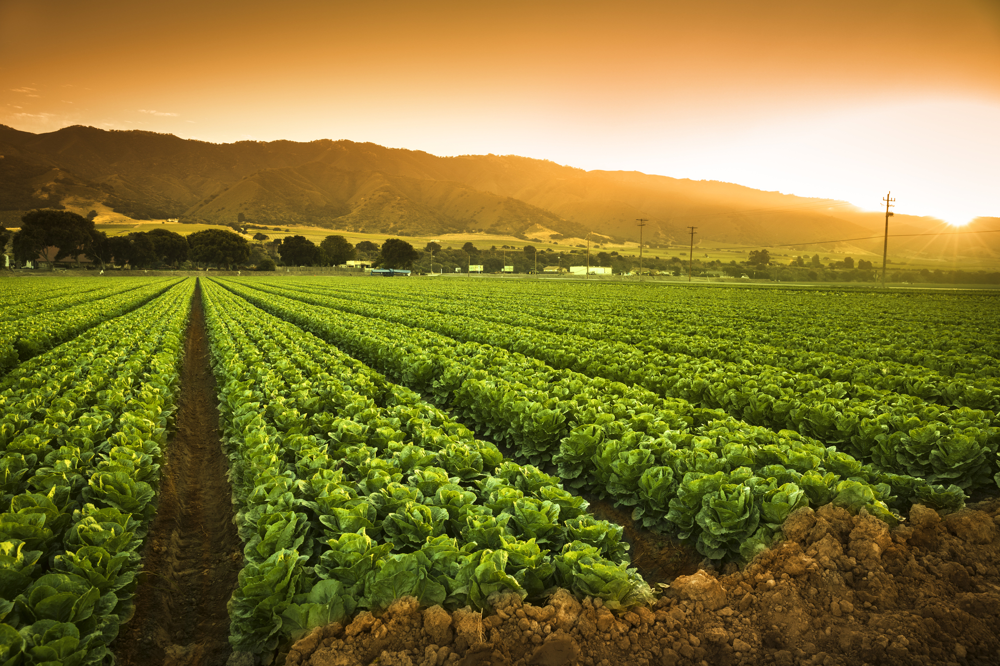
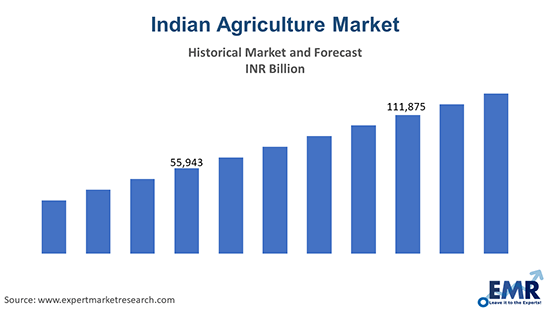

Agriculture encompasses crop and livestock production, aquaculture, fisheries and forestry for food and non-food products. Agriculture was the key development in the rise of sedentary human civilization, whereby farming of domesticated species created food surpluses that enabled people to live in cities.
The history of agriculture in India dates back to the neolothic. India ranks second worldwide in farm outputs. As per Indian economic survey 2018, agriculture employed more than 50% of the Indian work force and contributed 17–18% to country's GDP.
The services sector is the largest sector of India. Gross Value Added (GVA) at current prices for the services sector is estimated at 96.54 lakh crore INR in 2020-21. The services sector accounts for 53.89% of total India's GVA of 179.15 lakh crore Indian rupees. With GVA of Rs. 46.44 lakh crore, the Industry sector contributes 25.92%. While Agriculture and allied sector share 20.19%. At 2011-12 prices, the Agriculture & allied, Industry, and Services sector's composition is 16.38%, 29.34%, and 54.27%, respectively. Share of primary (comprising agriculture, forestry, fishing, and mining & quarrying), secondary (comprising manufacturing, electricity, gas, water supply & other utility services, and construction), and tertiary (services) sectors have been estimated as 21.82 percent, 24.29 percent, and 53.89 percent. At previous methodology, the composition of Agriculture & allied, Industry, and Services sector was 51.81%, 14.16%, and 33.25%, respectively at current prices in 1950-51. Share of Agriculture & allied sector has declined at 18.20% in 2013-14. Share of Services sector has improved to 57.03%. Share of Industry sector has also increased to 24.77%.
According to CIA Fackbook, sector-wise Indian GDP composition in 2017 is as follows: Agriculture (15.4%), Industry (23%), and Services (61.5%). With the production of agriculture activity of $375.61 billion, India is 2nd larger producer of agriculture products. India accounts for 7.39 percent of total global agricultural output. India is way behind China, which has $991 bn GDP in the agriculture sector. GDP of the Industry sector is $560.97 billion, and world rank is 6. India's world rank is eight in the Services sector, and its GDP is $1500 billion. The Agriculture sector's contribution to the Indian economy is much higher than the world's average (6.4%). The industry and services sector's contribution is lower than the world's average 30% for the Industry sector and 63% for the Services sector.